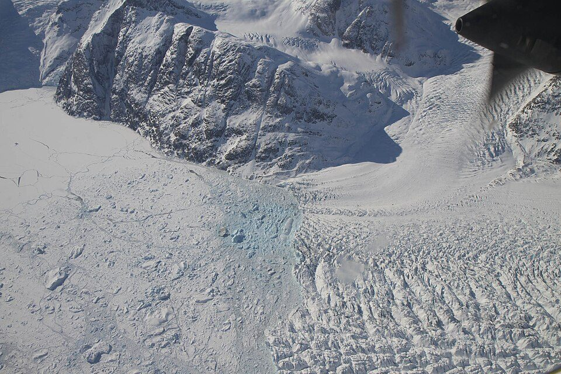

El cambio climático
La Tierra se ha calentado más de 1,2 °C desde la era preindustrial por los gases que emitimos. Las pruebas, las consecuencias y las soluciones.


El clima de la Tierra siempre ha cambiado, pero lo ha hecho a lo largo de miles o millones de años. Lo que ocurre ahora es distinto: la temperatura media del planeta ha subido más de 1,2 °C desde finales del siglo XIX, casi todo en los últimos 50 años, y la causa principal somos nosotros.
Una idea con más de siglo y medio
- En 1856 la científica estadounidense Eunice Foote demostró con unos tubos de vidrio al sol que el aire con dióxido de carbono se calentaba más que el aire normal, y sugirió que más CO₂ calentaría el planeta.
- En 1859 el irlandés John Tyndall midió qué gases absorben el calor.
- En 1896 el sueco Svante Arrhenius calculó cuánto se calentaría la Tierra si se duplicara el CO₂ quemando carbón. Su resultado no está lejos de los cálculos actuales.
- Desde 1958, Charles Keeling mide el CO₂ del aire en el volcán Mauna Loa, en Hawái. Su gráfica, la curva de Keeling, sube año tras año: de unas 315 partes por millón entonces a unas 425 hoy. Antes de la Revolución Industrial eran unas 280.
Cómo funciona
El Sol calienta la superficie de la Tierra, que devuelve parte de esa energía en forma de calor. Algunos gases de la atmósfera, como el dióxido de carbono, el metano y el vapor de agua, atrapan parte de ese calor, como el cristal de un invernadero. Al quemar carbón, petróleo y gas, talar bosques y criar enormes cantidades de ganado, hemos añadido más de esos gases y reforzado el efecto.
Las pruebas
- Temperatura: los diez años más cálidos registrados son todos de la última década. 2024 fue el año más caluroso desde que hay mediciones y el primero en superar en todo el año 1,5 °C sobre el nivel preindustrial.
- Hielo: el Ártico ha perdido alrededor del 40 % de su hielo de verano desde 1979, y casi todos los glaciares de montaña retroceden, incluidos los de los Pirineos.
- Mar: el nivel medio ha subido más de 20 cm desde 1900 y ahora sube unos 4 mm al año. Los océanos están más calientes y más ácidos.
- Extremos: las olas de calor son más frecuentes e intensas, y las lluvias torrenciales, más fuertes.
Lo que dice la ciencia
El IPCC, el grupo de científicos de la ONU creado en 1988 que revisa miles de estudios, concluyó en 2021 que es «inequívoco» que la influencia humana ha calentado la atmósfera, los océanos y la tierra. En el Acuerdo de París de 2015, casi todos los países del mundo se comprometieron a limitar el calentamiento muy por debajo de 2 °C y, a ser posible, a 1,5 °C.
España, en primera línea
España y el Mediterráneo se calientan más deprisa que la media mundial. Según la AEMET, el verano dura ahora unas cinco semanas más que a principios de los años ochenta, y las noches tropicales, en las que no se baja de 20 °C, se han multiplicado. Aumenta el riesgo de sequías, incendios y desertificación en el sur y el sureste, y el Mediterráneo bate récords de temperatura que alimentan danas más intensas.
Soluciones
La clave es dejar de emitir gases de efecto invernadero: producir electricidad con energías renovables, electrificar el transporte y la calefacción, ahorrar energía, proteger y recuperar bosques y suelos y cambiar algunos hábitos de consumo. España es uno de los países donde la transición avanza más deprisa: en 2024 las renovables, sobre todo el viento y el sol, produjeron más de la mitad de su electricidad. Además, hay que adaptarse a los cambios que ya son inevitables.
Vídeos para entenderlo mejor
- 5 revelaciones del informe de la ONU sobre cambio climático y qué dice sobre América LatinaBBC News Mundo · 6,3 M visualizaciones
- EL CAMBIO CLIMÁTICO EXPLICADOEl Robot de Platón · 3 M visualizaciones
Los vídeos son de YouTube y de sus autores. Se cargan solo al pulsar sobre ellos. Ver todos los vídeos →